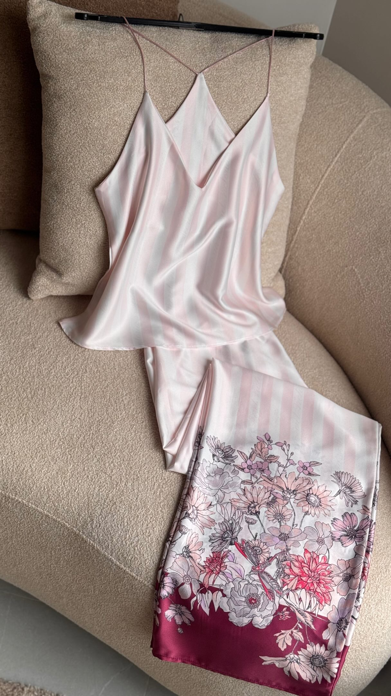

زیبایی در جزئیات است
از یک نگاه،
به یک انتخاب آگاهانه.
فرم لباس را ببین، پارچه را از نزدیک بررسی کن
و چیزی را انتخاب کن که با تو جور است.

از کالکشن خود Flower LadyBe stylish at home / Flower Lady
ببین. جزئیاتش را بشناس.
با خیال راحتتر انتخاب کن.
زیبایی در جزئیات است
فرم لباس را ببین، پارچه را از نزدیک بررسی کن
و چیزی را انتخاب کن که با تو جور است.
با اسکرول، لباس را بچرخان و جزئیات را از نزدیک ببین.
قبل از انتخاب، بیشتر بشناس
برای هر سؤال، یک نمای نزدیک.
نمای جلو، پشت و حرکت لباس همراه با قد مدل و سایز پوشیدهشده، مبنای این بخش خواهد بود.
اطلاعات واقعی محصول در انتظار دریافتکشش پارچه با ویدئوی همان محصول نمایش داده میشود. بدون اندازهگیری واقعی، عدد یا درجه کشسانی نمایش نمیدهیم.
ویدئوی بررسی کشسانی در انتظار دریافتنمای نزدیک و تصویر مقابل نور ثابت برای مقایسه ضخامت و پوشانندگی؛ همراه با ترکیب الیاف تأییدشده.
ترکیب الیاف و تصاویر در انتظار دریافتدستور شستوشو و مراقبت از برچسب همان لباس خوانده میشود تا روش نگهداری دقیق و قابل اتکا باشد.
دستور مراقبت برند در انتظار دریافتاز اینستاگرام تا انتخاب
با نام محصول یا کلیدواژه کپشن، به همان پست برس.
مشاهده پیج Flower Ladyکالکشن Flower Lady